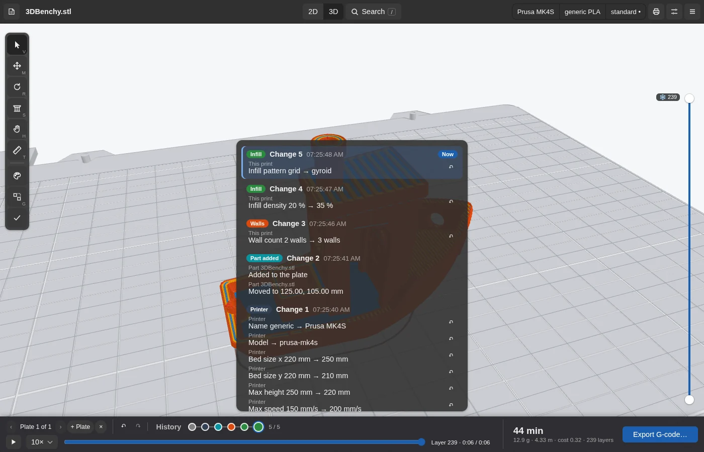

Everyday tasks
12Undo and history
Each change is a step. Go back to any step, and see the print as it was then.

Undo
- Ctrl+Z undoes a change: a setting, a move, a turn, a scale, a removed part, an edit of a line, or a support area.
- Ctrl+Shift+Z (or Ctrl+Y) redoes it.
- A drag of a slider is one step. The list keeps 100 steps.
The marks on the dock
- ↶ and ↷ undo and redo.
- Each change has a mark. The color and the glyph give its kind: walls, infill, speed, support, the printer, or a part.
- Point at a mark to see its change in words. Click it to go back: the print slices as it was then. The later changes stay, dimmed, until you edit something.
The History list
Click History on the dock.
- Each change has its time, its values, and its scope: the printer, the filament, this print, a part, or some layers.
- Click a change to go back to it, or use ↑ and ↓.
- Space goes back to the change before, so you can compare two changes.
- The ↶ of one setting undoes only that setting, and keeps the later changes.